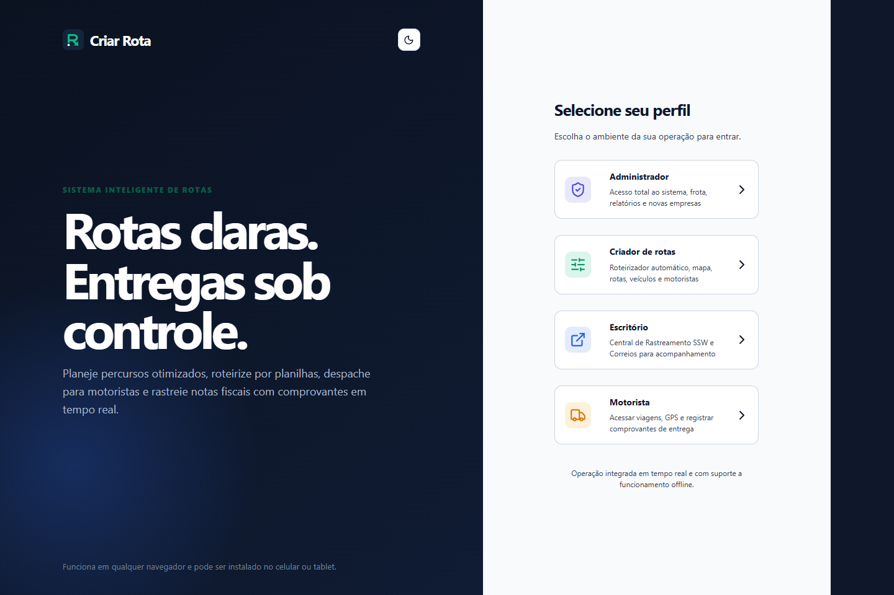

Mapeio pessoas, etapas e exceções antes de escolher ferramentas.
Disponível para oportunidades
Desenvolvedor back-end Java
MARCOS NETO.
Buscando estágio ou vaga júnior em desenvolvimento back-end. Estudante de Ciência da Computação na UNIFACISA, construindo APIs e sistemas para operações reais.
- 03projetos
aplicados - 02produtos em
produção - CCCiência da Computação
UNIFACISA
Marcos Neto // back-end

Projeto em destaque Criar Rota ↗Java 21Spring BootPostgreSQLDjangoReactDocker
01 Perfil
Tecnologia aplicada
Back-end primeiro. Produto completo.
Minha especialidade é transformar regras de negócio, documentos e rotinas operacionais em fluxos digitais seguros e fáceis de evoluir.
Atualmente curso Ciência da Computação na UNIFACISA e concentro meus estudos em Java, APIs, bancos de dados, automação e aplicações web para logística e gestão.
- Formação
- Ciência da Computação · UNIFACISA
Graduação em andamento - Objetivo
- Estágio ou posição júnior em back-end
- Também disponível para
- Projetos freelance de APIs, automações e sistemas web
Estados e validações claros tornam o sistema mais confiável.
Do banco de dados à experiência de quem opera o produto.
02 Cases selecionados
O que eu construí.
Conheça os sistemas, explore as demonstrações e veja as decisões técnicas que tomei em cada projeto.
01 / destaque


Criar Rota
Da carteira de pedidos ao retorno do caminhão: planejamento e acompanhamento de entregas em um só lugar.
Transformar pedidos em cargas e rotas exige trabalho manual, enquanto entregas, ocorrências e comprovantes ficam dispersos entre escritório e motoristas.
Importação de pedidos, verificação de disponibilidade em estoque e sugestões de cargas e rotas por cidades, peso e cubagem. Centraliza o acompanhamento da viagem, mantendo a revisão e as decisões com a equipe.
- Next.js
- React
- TypeScript
- PostgreSQL
- Leaflet
- PWA
Fluxo e decisões do produto
Planejamento e expediçãoImportação de planilhas, revisão de sugestões, sequência de carregamento e romaneios com números dos pedidos.
MotoristaNavegação, entregas, ocorrências, fotos, comprovantes e odômetros até o retorno do caminhão.
EscritórioConsulta de posições GPS transmitidas, comprovantes, comunicação e solicitações de pagamento conforme o perfil de acesso.
Limites e evoluçãoO saldo vem da planilha, não de uma reserva em tempo real. O novo painel comercial está em desenvolvimento; integração automática com ERP e rastreadores físicos são possibilidades futuras.
Imagens editadas para apresentação: dados comerciais ocultos e identificadores substituídos.
02 / logística
Visão geral e inventários · clique nas imagens para ampliar.


MN Check
Sistema para mapas de carga, separação por coletor, conferência de expedição e contagem de estoque em um fluxo logístico real.
Separação e conferência de cargas feitas manualmente dificultam a identificação de divergências e o acompanhamento da operação.
Leitura por coletor, validação de produtos e dupla conferência em um fluxo integrado, com registro de divergências e histórico rastreável.
Coletor / Web→Spring Boot API→PostgreSQL
- Java 21
- Spring Boot
- PostgreSQL
- PDFBox
- React
- Docker
Decisões e participação
Minha participaçãoDesenvolvimento full-stack da API, persistência, validação de códigos, leitura de documentos, interface, testes e publicação.
Decisão técnicaCombinar leitura assistida por IA com revisão humana e validações determinísticas antes de persistir os mapas.
FluxoUpload do mapa, rascunho editável, separação por coletor, conferência independente e registro de divergências.
QualidadeTestes para parser de PDF, normalização de SKU, código de barras e persistência.
A aplicação exige login. Explore as imagens para conhecer o projeto.


Chronos
Ecossistema de gestão de jornada com painel administrativo, registro de ponto por reconhecimento facial e operação offline em tablets.
Registros de ponto dispersos e ajustes manuais dificultam o controle de jornadas, escalas e banco de horas.
Gestão de jornada centralizada, com registro por reconhecimento facial, painel administrativo e operação offline em tablets, com sincronização posterior.
PWAs / React→Django REST→PostgreSQL
- Django REST
- Python
- React
- TypeScript
- PWA
- PostgreSQL
Decisões e participação
EscopoBack-end, painel administrativo, PWA de tablet, experiência móvel e landing page comercial.
Offline firstRegistros podem entrar em fila local no tablet e sincronizar quando a conexão retorna.
SegurançaDados isolados por empresa, perfis de acesso, dispositivos autorizados e trilha de auditoria.
ComunicaçãoLanding page com planos, FAQ, SEO, conversão pelo WhatsApp e páginas de privacidade.
03 Stack com propósito
Ferramentas ligadas ao que eu entrego.
Mais do que listar tecnologias, estas são as responsabilidades que assumo ao construir um produto.
Regras e APIs
Serviços, autenticação, validações e integrações orientadas à operação.
Java Python
Python Spring Boot
Spring Boot DjangoRESTJWT
DjangoRESTJWT
Dados rastreáveis
Modelagem, persistência, histórico e isolamento seguro por contexto.
Interfaces de produto
Experiências responsivas para desktop, tablet e operação móvel.
Entrega e automação
Documentos, containers, versionamento e publicação contínua.
04 Processo
Do problema ao sistema.
Uma abordagem simples para reduzir incerteza antes de escrever código e validar o produto com situações reais.
- 01Entender a operação
Pessoas, etapas, exceções e resultado esperado.
- 02Modelar regras e dados
Entidades, estados, permissões e validações.
- 03Construir o fluxo completo
Back-end, dados e interface funcionando como produto.
- 04Validar e evoluir
Casos reais, testes proporcionais ao risco e ciclos curtos.
Aberto a estágio, posição júnior e projetos freelance
Vamos construir algo útil de verdade.
Se existe uma operação para organizar, uma API para estruturar ou um produto para tirar do papel, vamos conversar.